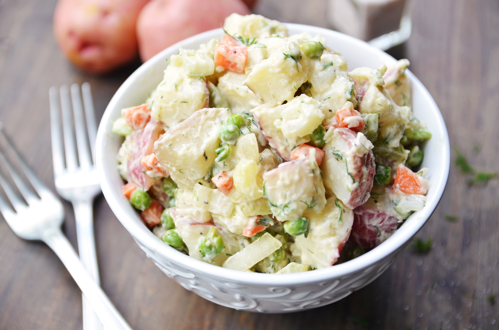

Potato Salad

Ingredients
- 5 potatoes
- 3 eggs
- 1 cup chopped elery
- 1/4 cup chopped onion
- 1/2 cup sweet pickle relish
- 1/4 cup mayonnaise
- 1 tablespoon mustard
- Seasonings
How to make
- Bring a large pot of salted water to a boil. Add potatoes and cook until tender but still firm, about 15
minutes.
- Drain, cool, peel, and chop potatoes.
- While potatoes cook, place eggs in a saucepan and cover with cold water. Bring water to a boil; cover, remove
from heat, and let eggs stand in hot water for 10 to 12 minutes.
- Remove from hot water, cool, peel, and chop eggs.
- Combine the potatoes, eggs, celery, onion, relish, mayonnaise, mustard, garlic salt, celery salt, and pepper in a large bowl. Mix together well and refrigerate until chilled.
- Enjoy!